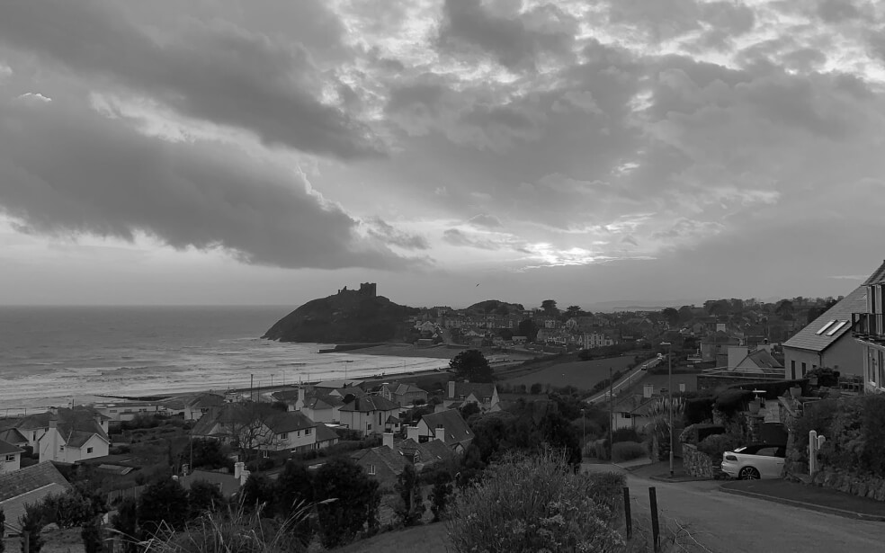

From Homeland to Homeland
An epic journey from Kentucky to Burundi via Wales and Ukraine.

Learn more about your friends' locations.
Each person is a free artist, called to transform the conditions, thoughts, and structures that shape our lives.
The city of TripleTen has brought together professionals from all corners of the world. Today, the TripleTen Art Gallery is proud to present stories and photos of some of the people who dedicate their time and effort to making the future tech professionals of this city feel at home. Each of us has a unique story about where we come from. Feel free to add your own story and a piece of visual art dedicated to your hometown to our collection. No matter where you're from, we're happy you're our neighbor.